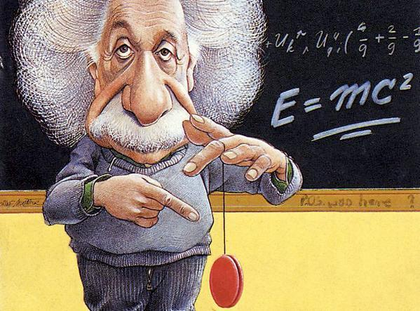

СПРАВКА
Основные этапы работы системы:
- Ввод данных пользователем
- Вывод условий мини-задачи системой ПАРИЗ
С которыми он может согласиться, дополнить, либо заново запустить процесс создания мини-задачи,
подкорректировав входные данные
- Система выделяет и выводит пользователю конфликтующую пару элементов: изделие и инструмент.
- Система строит графические схемы технических противоречий(ТП).
- Пользователь выбрает из двух схем конфликта (ТП-1 и ТП-2) ту,
которая обеспечивает наилучшее осуществление главного производственного процесса.
- Автоматическое усиление конфликтов
- Вывод системой формулировки модели задачи
- Модель задачи анализируется пользователем
- По желанию пользователя модель задачи дорабатывается
- Система определяет доступные пользователю ресурсы
(внутрисистемные, внесистемные, над системные)
- Система формулирует идеальный результат
- Система выдает ользователю способы устранения противоречий
- В случае неудовлетворения решения пользователь формулирует новую задачу
ИНФОРМАЦИОННЫЙ ФОНД
О ПРОЕКТЕ
ПАРИЗ - это автоматизированный АРИЗ.
О АВТОРЕ АРИЗ:
ГЕНРИХ САУЛОВИЧ АЛЬТШУЛЛЕР
15.10.1926 - 24.09.1998
Генрих Саулович Альтшуллер (псевдоним - Генрих Альтов)
- автор ТРИЗ-ТРТС (теории решения изобретательских задач - теории развития технических систем),
автор ТРТЛ (теории развития творческой личности), изобретатель, писатель.
Начав с попытки создания методики изобретательства, Генрих Саулович Альтшуллер
создал теорию сильного мышления (включающую ТРИЗ-ТРТС, РТВ, ТРТЛ),
которую десятки тысяч людей во всем мире используют для решения творческих проблем
в различных областях человеческой деятельности.
ПАРИЗ:
- ПАРИЗ - это Помощник по Алгоритму Решения Изобретательских Задач
- ПАРИЗ - это система, которая позволит быстро и точно определить возможные пути решения изобретательских задач
- ПАРИЗ - это автоматизированный алгоритм, обеспечивающий переход от расплывчатой изобретательской ситуации к
четко построенной и предельно простой схеме, работа с которой упрощает дальнейшие рассуждения.
КАК РАБОТАЕТ ПАРИЗ:
Система разработана для частного использования (через веб сайт)
В системе предусмотрено два вида ввода информации пользователем:
- текстовый формат
- графический формат:
- 
-
После ввода информации и пошаговом следовании инструкциям системы пользователю будут предложены наиболее рациональные варианты решения задачи
НАША КОМАНДА:
- Быконя Денис
- Гусев Антон
- Данякин Иван
- Курочкин Денис
- Маренков Александр
- Минаков Андрей
- Нам Индира
- Павленко Алексей
- Поликарпов Денис
- Смиянов Алексей
- Сосорев Александр
- Тютюнникова Юлия
- Федоткин Дмитрий